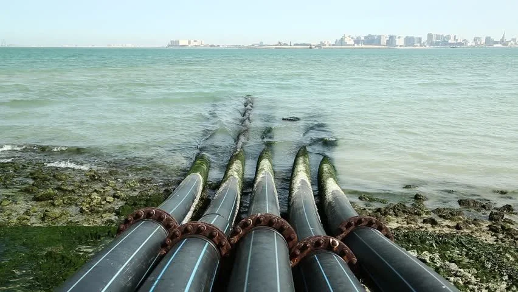
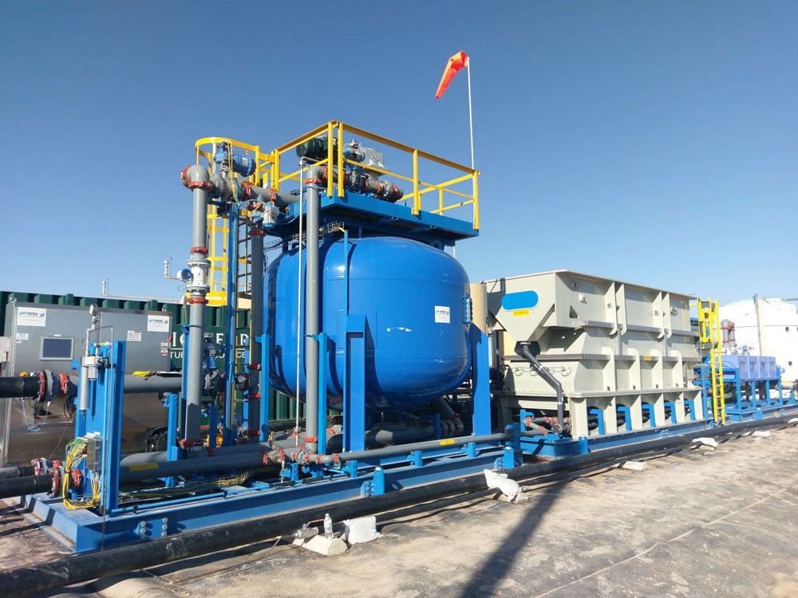
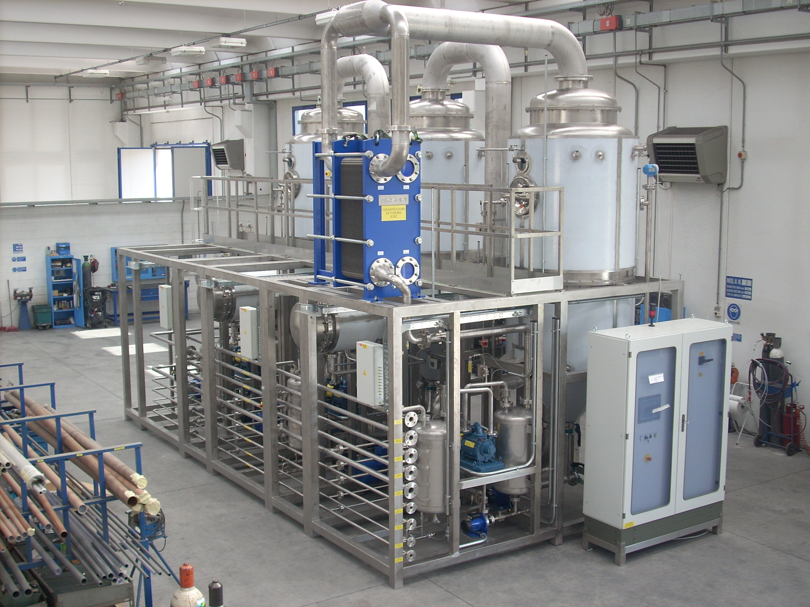
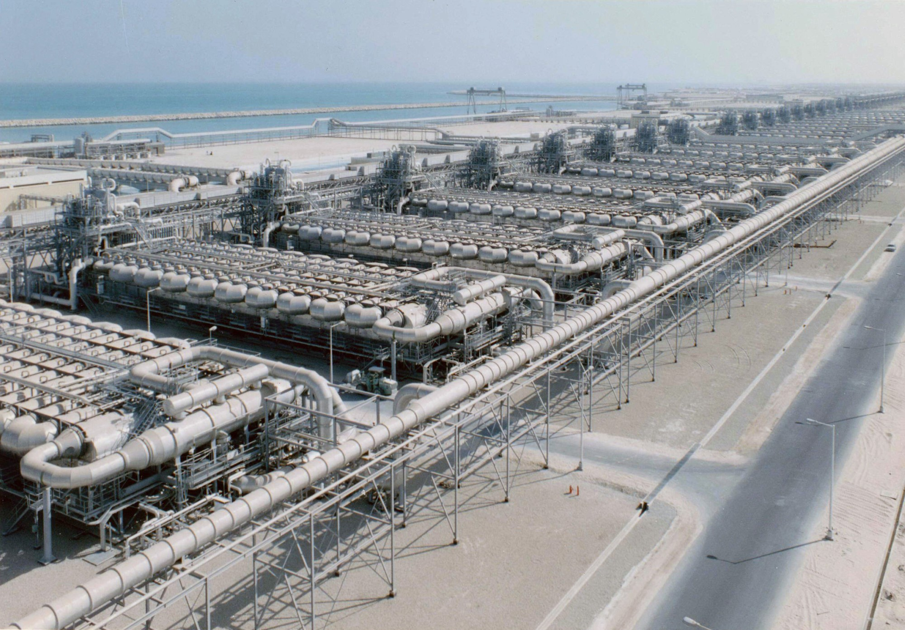
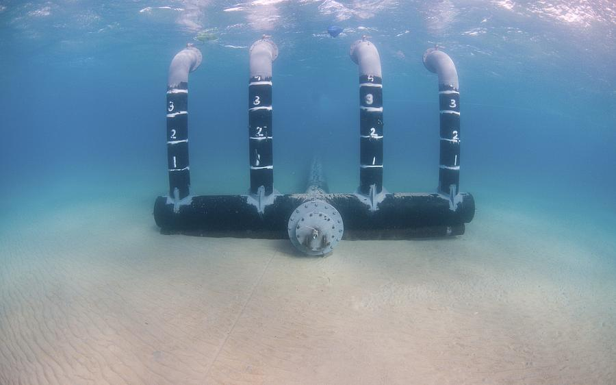
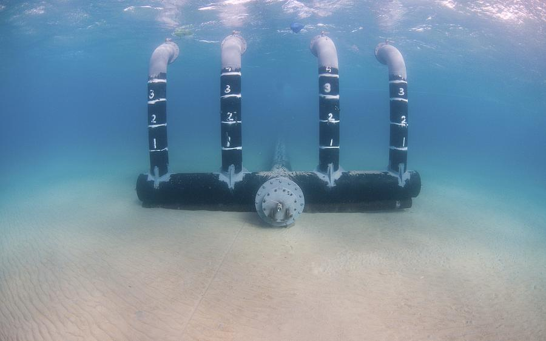
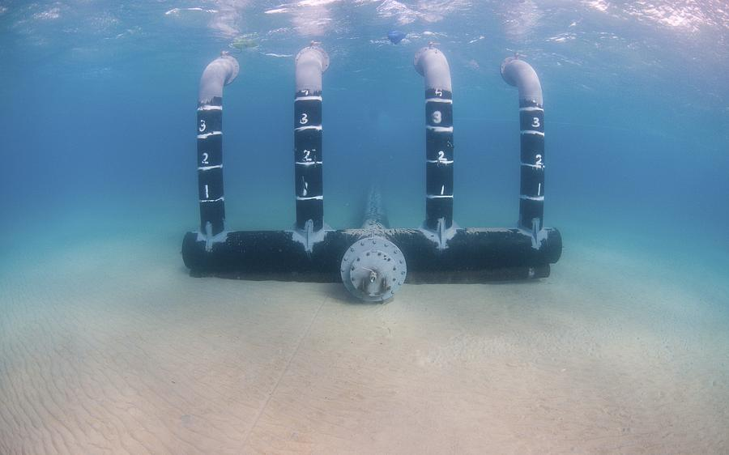
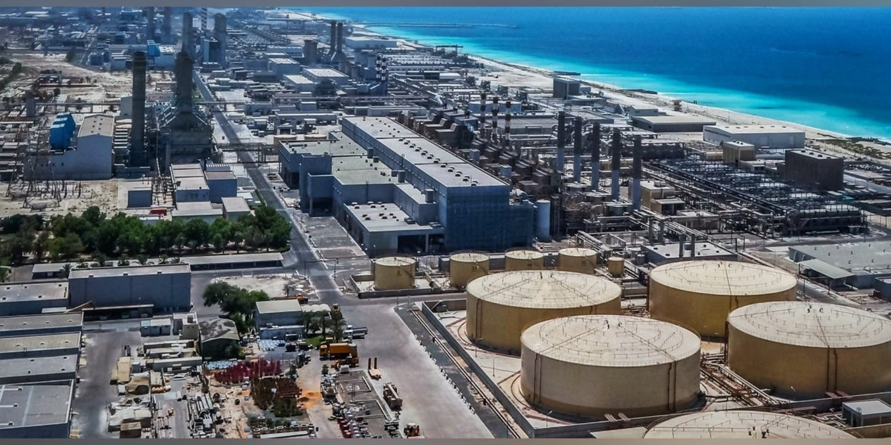
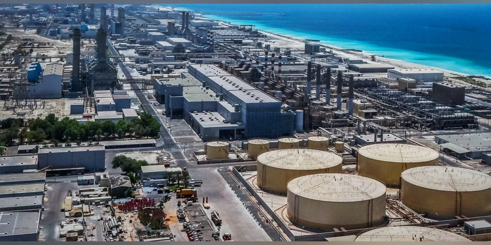

Une manque d'eau potable...
Il existe des problèmes concernant l’eau potable à travers le monde. Par exemple, il existe des manques d’eau douce dans des régions près de la mer, tels que le Golfe Persique, en Afrique du Nord, ou en Australie. En addition, certaines îles isolées, surtout dans les Caraïbes, ont des problèmes d’approvisionnement d’eau car l’eau qui les entourent est trop salée pour la consommation.
Ce phénomène n’est certainement pas limité au pays et aux îles, mais dérange aussi des très grandes villes comme São Paulo et Mumbai. Le manque d’eau douce dans certaines zones arides cause une incapacité de cultiver des aliments, et tout ceci entraîne des conflits pour l'accès à l’eau, notamment dans des régions comme le Moyen-Orient à cause du rivière du Nile, Tigre et de l’Euphrate.
Ce phénomène n’est certainement pas limité au pays et aux îles, mais dérange aussi des très grandes villes comme São Paulo et Mumbai. Le manque d’eau douce dans certaines zones arides cause une incapacité de cultiver des aliments, et tout ceci entraîne des conflits pour l'accès à l’eau, notamment dans des régions comme le Moyen-Orient à cause du rivière du Nile, Tigre et de l’Euphrate.
C'est quoi la dessalement de l'eau?
Il existe plusieurs solutions à ces problèmes. Premièrement, on pourrait tout collectivement contribuer à la gestion durable de l’eau en limitant notre consommation, en recyclant l’eau et en soutenant le développement de technologies de dessalement, ce dernier étant le sujet de ce projet.
La dessalement de l’eau consiste simplement à enlever le sel de l’eau de mer pour le rendre potable. Il existe quelques actions concrètes qu’on peut faire pour promouvoir le dessalement de l’eau: encourager les gouvernements et les entreprises à investir dans l’infrastructure pour effectuer ces processus, soutenir la recherche et le développement dans ce domaine, et sensibiliser le public à l’importance du dessalement. Bien que le dessalement soit une solution importante pour l’approvisionnement de l’eau douce, il est essentiel de s’assurer que comment on le met en œuvre est durable sur le plan environnemental en réduisant l’impact sur les écosystèmes aquatiques et en utilisant des sources d’énergie renouvelables.
Maintenant, commençons avec comment la dessalement fonctionne. Il existe primairement deux méthodes pour le faire: la distillation et l’usage de l'osmose à travers les membranes. Explorons-les...
La dessalement de l’eau consiste simplement à enlever le sel de l’eau de mer pour le rendre potable. Il existe quelques actions concrètes qu’on peut faire pour promouvoir le dessalement de l’eau: encourager les gouvernements et les entreprises à investir dans l’infrastructure pour effectuer ces processus, soutenir la recherche et le développement dans ce domaine, et sensibiliser le public à l’importance du dessalement. Bien que le dessalement soit une solution importante pour l’approvisionnement de l’eau douce, il est essentiel de s’assurer que comment on le met en œuvre est durable sur le plan environnemental en réduisant l’impact sur les écosystèmes aquatiques et en utilisant des sources d’énergie renouvelables.
Maintenant, commençons avec comment la dessalement fonctionne. Il existe primairement deux méthodes pour le faire: la distillation et l’usage de l'osmose à travers les membranes. Explorons-les...




 


1/6
LA PRISE D'EAU
La dessalement commence toujours avec la collection de l’eau de mer. Ceci devrait être complété avec un système de collection qui ne dérange pas la vie aquatique.
2/6
LA FILTRATION
L’eau de mer qui était collectée devrait être filtrée pour enlever tous les matériaux indésirables tels que les roches et l’algue. Si ceci n’était pas fait, les systèmes suivants qui ont été conçus spécifiquement pour régler l’eau salée pourraient être endommagés.
3/6
LA CHAUFFAGE
L’eau est réchauffée à un état dans lequel elle peut être efficacement évaporée. En même temps, il subit la pressurisation qui l’empêche de le faire en ce moment. Alors l’eau atteint un température élevée mais ne s’évapore pas.
4/6
L'ÉVAPORATION
L’eau salée subit un processus qui s'appelle “l’évaporation flash à plusieurs étapes” dans lequel il se passe dans plusieurs chambres et subit l’évaporation flash. Cette eau devient de la vapeur, perdant le sel et les impuretés.
5/6
LA CONDENSATION
La vapeur d’eau distillée condense sur une surface froide dans l’eau fraîche qui est prête pour la consommation.
6/6
LA RECYCLAGE
La saumure, l’eau salée qui n’a pas évaporée, est recyclée et utilisée pour réchauffer l’eau de mer qui s’en vient. Ceci rend le système plus efficace en termes d'énergie requiert. Après, il est retournée à la mer, comme dans cette photo.
Méthode #1 | La distillation
Méthode #2 | Les membranes
I. LA PRISE D'EAU
La dessalement commence toujours avec la collection de l’eau de mer. Comme toujours, ceci devrait être complété avec un système de collection qui ne dérange pas la vie aquatique.
II. LA FILTRATION
L’eau doit être filtrée pour enlever des matériaux indésirables. Sinon, les membranes dans la prochaine étape qui devraient déjà être remplacées périodiquement deviendraient endommagées.
III. L'OSMOSE
L’eau salée filtrée subit l’osmose inverse à travers une tube long dans de la pression haute. Ceci enlève le sel et crée deux produits: l’eau fraîche et la saumure (de l’eau encore plus salée). La saumure est recyclée puis retournée à la mer.
IV. LA TRAITEMENT
L’eau fraîche produite est trop pure pour la consommation et aurait une saveur qui semblerait bizarre. Il faut rajouter des minéraux à l’eau pour régler ceci et le rendre prêt pour la consommation.
RAS #1
ENTHALPIE DE RÉACTION
ENTHALPIE DE RÉACTION
30-A1.3c
Dans la dessalement par distillation, l’eau de mer est chauffée pour produire la vapeur d’eau. Cette vapeur est ensuite condensée pour produire l’eau fraîche. La changement en enthalpie en relation à chaleur requiert pour évaporer l’eau est essentiel pour déterminer l’efficacité du processus.
Dans la dessalement par distillation, l’eau de mer est chauffée pour produire la vapeur d’eau. Cette vapeur est ensuite condensée pour produire l’eau fraîche. La changement en enthalpie en relation à chaleur requiert pour évaporer l’eau est essentiel pour déterminer l’efficacité du processus.
RAS #2
RÉACTIONS D'OXYDORÉDUCTION
RÉACTIONS D'OXYDORÉDUCTION
30-B1.4c
Les technologies de dessalement nécessitent une bonne compréhension des transferts d'électrons, des agents oxydants et réducteurs, ainsi que de l'attribution des nombres d'oxydation, afin d'optimiser les processus et d'éviter la corrosion des équipements.
Les technologies de dessalement nécessitent une bonne compréhension des transferts d'électrons, des agents oxydants et réducteurs, ainsi que de l'attribution des nombres d'oxydation, afin d'optimiser les processus et d'éviter la corrosion des équipements.
AVANTAGES ET INCONVÉNIENTS
Alors pourquoi utiliser un système au lieu de l’autre? Entre la distillation et l’usage des membranes, laquelle est la meilleure option? La réponse est que ça dépend!
Les membranes sont typiquement plus efficaces en termes d’énergie utilisée et produisent l’eau fraîche à un taux plus élevé.
Cependant, Dubai utilise une station de dessalement qui utilise la distillation car les machines qui font fonctionner la distillation sont plus robustes. Il n’y a aucun membrane qui doit être remplacer, ça peut mieux traiter des contaminants, et les températures élevées de la région ne peuvent dégrader aucun membrane. 
Les membranes sont typiquement plus efficaces en termes d’énergie utilisée et produisent l’eau fraîche à un taux plus élevé.
Cependant, Dubai utilise une station de dessalement qui utilise la distillation car les machines qui font fonctionner la distillation sont plus robustes. Il n’y a aucun membrane qui doit être remplacer, ça peut mieux traiter des contaminants, et les températures élevées de la région ne peuvent dégrader aucun membrane. 